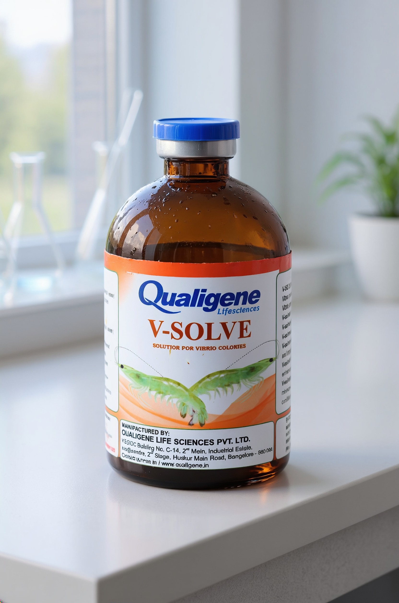
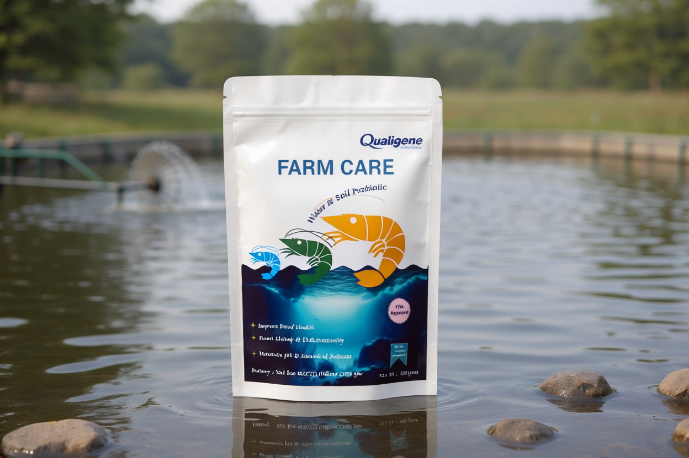

Science-backed aquaculture & poultry solutions
Healthier ponds, stronger flocks, better harvests.
Qualigene Lifesciences develops probiotic, aquaculture, and veterinary products built for real farm outcomes — from controlling Vibrio colonies and white gut in shrimp to boosting poultry flock health with science-led formulations backed by GMP, HACCP, and ISO certification.
Aqua Focus
Improving water quality and farm care for healthier aquaculture.


GMP · HACCP · ISO certified — Qualigene Lifesciences delivers probiotic and microbial solutions for shrimp, fish, and poultry farms across Andhra Pradesh, Tamil Nadu, Goa, and Odisha.
About Qualigene
A research-driven life sciences company built for aquaculture, poultry, and probiotic health solutions.
Who we are
Qualigene Lifesciences is a Bengaluru-based life sciences company founded by professionals with deep expertise in pharmaceutical R&D, veterinary products, and aquaculture product development.
Our mission: deliver practical, research-driven probiotic and microbial solutions that improve farm outcomes across shrimp culture, fish farming, and commercial poultry — and build a future beyond antibiotic-dependent health programs through bacteriophage-led innovation.
Company details
- Company: Qualigene Life Sciences PVT LTD
- GST: 29AABCQ0141Q1Z6
- PAN: AABCQ0141Q
- Phone: +91 96205 77819
- Email: info@qualigene.in
- Address: Building No: 353/C14, KSSIDC Industrial Estate, Veerasandra 2nd Stage, Anekal Taluka, Bengaluru Urban, Karnataka 560100
Solutions
Two active sectors, one common goal: healthier production with better control.
Probiotic flock health with E-STAT
E-STAT is Qualigene’s probiotic formulation for commercial poultry — improving microbial balance, reducing reliance on antibiotics, and supporting healthier growth across broiler and layer operations.
Shrimp & fish pond health solutions
Farm Care, V-Solve, Qualymine, Enterodragon, and ProWhite-X address the full spectrum of pond-health challenges — from Vibrio control and white gut to mineral supplementation and probiotic water quality.
Towards antibiotic-free aquaculture
Qualigene actively invests in bacteriophage-oriented research and process innovation to replace antibiotic-heavy practices with science-led, sustainable farm health programs.
Product Portfolio
Six products for aquaculture and poultry — each backed by research, certifications, and real field use.
Farm Care
Water & Soil Probiotic with 20 billion CFU/gm potency. Improves pond health, boosts shrimp and fish immunity, and maintains pH and microbial balance. CAA approved.
View Product Details
V-Solve
Solution for Vibrio Colonies in shrimp ponds. Available in 100mL bottles (5 per box). Controls Vibrio effectively to improve survival rates and pond health. CAA approved.
View Product Details
Qualymine
Liquid Minerals supplement for shrimp and fish aquaculture. Available in 5L commercial packs. Supports mineral balance and stronger pond productivity throughout the culture cycle.
View Product DetailsEnterodragon
Animal feed supplement targeting EHP (Enterocytozoon hepatopenaei) in shrimp culture — supports gut health, improves energy conversion, and strengthens pond performance. CAA approved.
View Product DetailsProWhite-X
Healthy Gut, Healthier Harvest. 1kg probiotic formula that controls white gut syndrome, promotes healthy shrimp culture, and improves water quality. CAA approved.
View Product DetailsE-STAT
Probiotic poultry solution for commercial flock health — reduces harmful bacteria, supports microbial balance, and helps birds maintain healthier growth across production cycles.
View Product DetailsProduct Gallery
Farm-ready formulations — photographed in real aquaculture environments.

V-Solve
Solution for Vibrio Colonies

V-Solve
100mL bottle — field-use format

Farm Care
Water & Soil Probiotic
Qualymine
Liquid Minerals — 5L pack
Why Qualigene
Certified, documented, and built for commercial aquaculture and poultry farmers.
CAA-approved products
Farm Care, V-Solve, Enterodragon, and ProWhite-X carry CAA documentation — giving distributors and buyers fast access to validated compliance materials.
GMP · HACCP · ISO certified
Company-level certifications across quality systems, hazard analysis, and international standards provide a trust foundation that commercial buyers can verify directly.
5000 sq. ft. GMP facility
Calibrated production infrastructure in Bengaluru with continuous process improvement — built for consistent quality at commercial scale.
Specialist team
Founded by professionals with backgrounds in pharmaceutical R&D, veterinary science, and aquaculture — translating deep domain knowledge into practical farm solutions.
Compliance & Reach
Production strength, verified certifications, and active market presence across South India.
GMP · HACCP · ISO certified
All three company-level certifications are active and downloadable directly from this website — built for partner and distributor confidence.
CAA documents for 4 products
Farm Care, V-Solve, Enterodragon, and ProWhite-X all carry current CAA files — available as direct PDF downloads below.
AP · TN · Goa · Odisha
Active distribution across the highest-density aquaculture and commercial poultry regions in South and East India.
Certifications
Compliance documents and product CAA files available as direct downloads.
Company certifications
GMP Certificate HACCP Certificate ISO CertificateProduct CAA documents
Farm Care CAA V-Solve CAA Entero-Dragon CAA ProWhite-X CAAContact Qualigene
Get in touch for products, pricing, and distribution enquiries.
Whether you're a farm owner looking for specific solutions, a distributor seeking to stock the range, or a buyer needing CAA documentation — reach us directly.